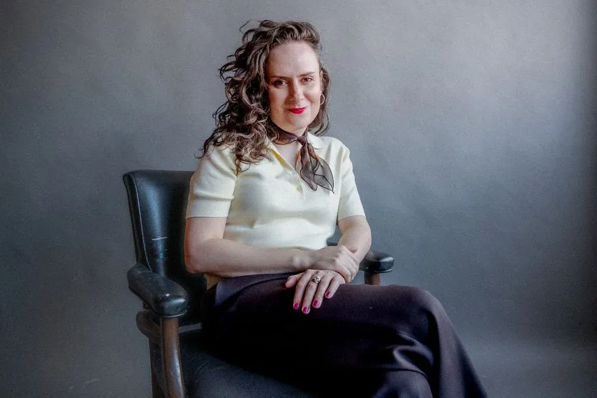

★ About
Zoë creates theatre to spark imagination and open hearts to the magic of transformation.
As a theatre director, I strive to create conditions where audiences can reunite their child-like imaginations with their vulnerable hearts. When the imagination and heart team up we have the power to transform ourselves and the world around us. As an artist, my mission is to invite others to see a world beyond what we’ve been told is possible. Through my experiences as a transgender woman I have expertise in problem-solving and a flair for creating new possibilities. I delight in creative challenges and embrace conflict as a path for growth.
Biography
Zoë Adams is a Brooklyn-based theatre director originally from Spring, Texas. She is the 2024–2026 Drama League Stage Directing Fellow and recently served as Associate Director to Anna Shapiro on the Tony Award–winning EUREKA DAY at Manhattan Theatre Club. Zoë has collaborated with New York Stage and Film, Berkeley Repertory Theatre, and Red Bull Theater, and recently directed a reading of Abby Rosebrock’s SINGLES IN AGRICULTURE starring Lily Rabe and Hamish Linklater. She’s also the Co-Creative Director of the Glamour Women of the Year Awards. An alumna of Columbia University’s MFA Directing program and a Member of SDC, Zoë is drawn to theatricality, spectacle, and bold, imaginative worlds—and dreams of one day directing the Olympics Opening Ceremonies.
Zoë studied puppetry and object manipulation with Mervyn Millar at the Eugene O’Neill Theatre Center, Viewpoints with SITI Company, and Moment Work with Leigh Fondakowski of Tectonic Theatre Project.
MFA, Directing, Columbia University
Résumé